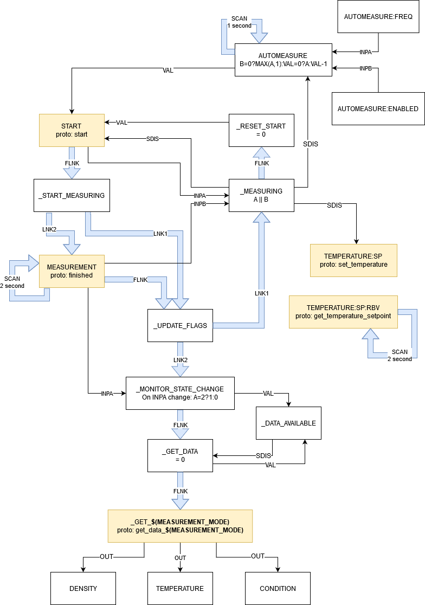

DMA4500m Density Meter
The device’s IOC was originally developed at ESS, then updated to match ISIS requirements and conventions. The original code is available here.
It is a densitometer which currently measures density and temperature.
Documentation
Vendor documentation is available at \\ISIS\shares\ISIS_Experiment_Controls\Manuals\AntonPaar__DMA4500.
Connection Details
RS-232C Specifications |
|
|---|---|
Baud rate |
9600 Baud |
Stop bits |
1 bit |
Parity |
None |
Data length |
8 bit |
Flow control |
None |
Notes:
Commands and returned values are terminated with CR
Only one command should be sent per second
Quirks
Raw data and temperature setpoint
According to the device manual, the getrawdata command returns the “current raw data values”. Judging from the device output, the response is in this format:
{density};{temperature};{temperature setpoint};{sample id}
where:
density and temperature are “instant” measurements of the current sample density and temperature. The seem to oscillate slightly if the command is run multiple times in a row, so the error is likely quite high.
temperature setpoint is the current temperature setpoint. After a
settemperaturecommand is sent to the device, this setpoint immediately updates to the value specified insettemperatureand the “instant” temperature measurement can be observed to ramp up/down towards the setpointsample id is a value that is increased by 1 every time a measurement is run (at least when started by the
startcommand, possibly when started through the device GUI as well)
Simulation
The IOC logic is fairly complex and uses features not supported by RECSIM, so RECSIM has not been implemented for this device.
Automeasure
When automeasure is enabled, the IOC periodically starts a measurement without user intervention. 3 PVs are involved in this:
AUTOMEASURE:FREQ: the interval between measurements (in seconds)AUTOMEASURE:ENABLED: a binary record that’s 1 when automeasure is enabled, 0 otherwise (default)AUTOMEASURE: thecalcoutPV responsible for starting measurements
AUTOMEASURE runs every second, using AUTOMEASURE:FREQ and AUTOMEASURE:ENABLED as its inputs. When automeasure is enabled, the value of this PV is set to the interval specified in AUTOMEASURE:FREQ. Every second, the PV’s value is decreased until it reaches 0; when this happens, a new measurement is started and the value is reset to AUTOMEASURE:FREQ. The countdown is suspended while a measurement is running (through an SDIS field) so we’re only counting the interval between two measurements. In pseudocode:
def process_pv():
if not automeasure_enabled:
count = max(automeasure_freq, 1)
else:
if count = 0:
count = automeasure_freq
else:
count-= 1
return count
Note that a measurement is started whenever the value of AUTOMEASURE is 0, so if AUTOMEASURE:ENABLED is 0 but AUTOMEASURE:FREQ is also 0 we have to manually set the count to a non-zero value to avoid starting a measurement. This has the side effect that there will always be at least a 1 second delay between enabling automeasure and the start of the first measurement.
Delays when running on the real device
I have observed that when the automeasure code is run on the real device the interval between measurements can be inconsistent. This seems to be due to a random delay when starting measurements: the IOC tells the device to start a measurement, but the device takes a few seconds to actually start one. This can lead to longer intervals than the user may have expected.
Measurement Mode
The data sent back by the device is parsed according to the current measurement mode, which is set by $(MEASUREMENT_MODE) macro. Currently, the only supported mode is DENSITY_ONLY (for measuring density, temperature and measurement validity).
From the device’s point of view, the measurement results are returned by the getdata command. The quantities to be measured and their position in the results list are determined by the active “method”. Methods are defined by the user using the device’s GUI, and they can include a large number of different quantities in any order specified by the user. The device does offer a getdatahead command to get the name and position of the quantities returned by getdata, but there is no easy way of parsing the output of this command to automatically make sense of the results list. For this reason, we need to manually add a measurement mode for every method used at ISIS, and users must make sure to set the $(MEASUREMENT_MODE) macro in IBEX to match the method they’re using.
IOC diagram:
